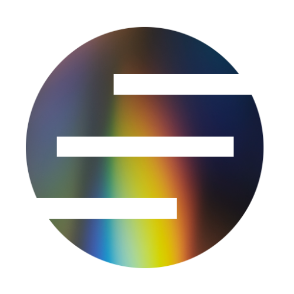

Powered by MERCURY AI
Many UAV's · One Command Center
A unified interface powered by the MERCURY AI Brain. It ingests raw drone telemetry and converts it into actionable 3D intelligence. Completely open, fully automated, and built from the ground up.
FFmpeg + COLMAP pipeline: video → 5-stage Structure-from-Motion → GPS-tagged 3D point cloud.
MERCURY Vision Engine: Real-time frame scanning for persons, vehicles, and anomalies with geofence alerting.
Arduino serial bridge: Real-time PM2.5, gas, and environmental metrics synced with mission telemetry.
Existing workflows require multiple separate tools for flight, mapping, sensors, AI, and reporting. MERCURY consolidates all of that into a single command center.
Autonomous aerial coverage allows monitoring of polluted zones, dumping sites, and restricted areas without putting ground crews at risk.
Converting raw aerial footage into actionable intelligence — 3D maps, AI detections, sensor analytics — requires costly specialized software. MERCURY makes that full pipeline open, automated, and deployment-ready.
One operator, one PC, one command center. Drones plan, fly, and report by themselves. MERCURY handles the brainwork so a single operator can oversee thousands of units.
Particulate (PM2.5/PM10) mapping across factory corridors. Geo-referenced concentration maps — find pollution hotspots invisible from the ground.
Surface texture + thermal signature analysis to detect illegal discharges in the Arabian Gulf. Automated alert within T+10 min of detection.
YOLO26 detects unauthorized persons, vehicles, and weapons in restricted protected zones. Real-time alerts with GPS coordinates.
Identifies illegal waste sites, hazardous containers, and pollution sources that ground crews cannot safely access.
MERCURY AI · PROJECT AURA · GULF ASIAN ENGLISH SCHOOL · 2026